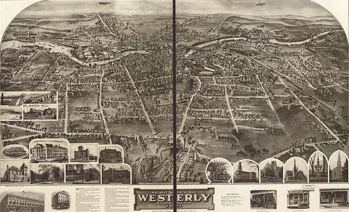
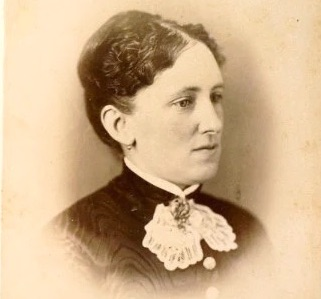

Thornton House, built in 1863, is a historic landmark in Westerly, Rhode Island. Once inhabited by Mary Thornton, it is now said to be haunted by her and her alleged victims. Today, the house serves as a time capsule, preserving the history of the town and providing tours for those who wish to step into the past.
History
Origin
Thornton House was built in 1863 by Edward Thornton, a wealthy merchant from Providence, for his new wife, Mary. Soon after its construction, the Thorntons moved in accompanied by Mary’s mother, Catherine, and turned the house into an inn. Thornton House quickly became the most popular inn in Southern Rhode Island. Unfortunately, the good fortune did not last as Edward died in a freak accident in the spring of 1871, followed by Catherine four months later, leaving Mary to manage the inn.


- Mary Thornton-
Mary Thornton
Soon after the deaths of her family, neighbors noticed Mary began acting strangely. The once frugal Mary developed a taste for luxury and a habit of making expensive purchases. Neighbors also claimed to see smoke from one of Thornton Houses chimneys every afternoon, even in the dead of summer. Neighbors blamed her behavior on grief until 1875, when the body of a Thornton House tenant was found in the nearby woods. When authorities investigated, they found that over a dozen people had gone missing while staying at Thornton House over the course of six years. Mary never gave an explanation for the disappearances as she disappeared after the investigation began, never to be seen again
- Mary Thornton-
1873 to Present
Thornton House continued to be an inn until 1947, when it became a private residence until becoming a museum in 2001. And while Mary Thornton was never seen again, the strange disappearances continued well into the 20th century. Some of the missing persons have been accounted for, but most have not, and there is no concrete answer for what happened to them.
Today, Thornton House is one of the best-preserved houses from the 19th century in Rhode Island and is a popular destination for those interested in history and mystery alike.